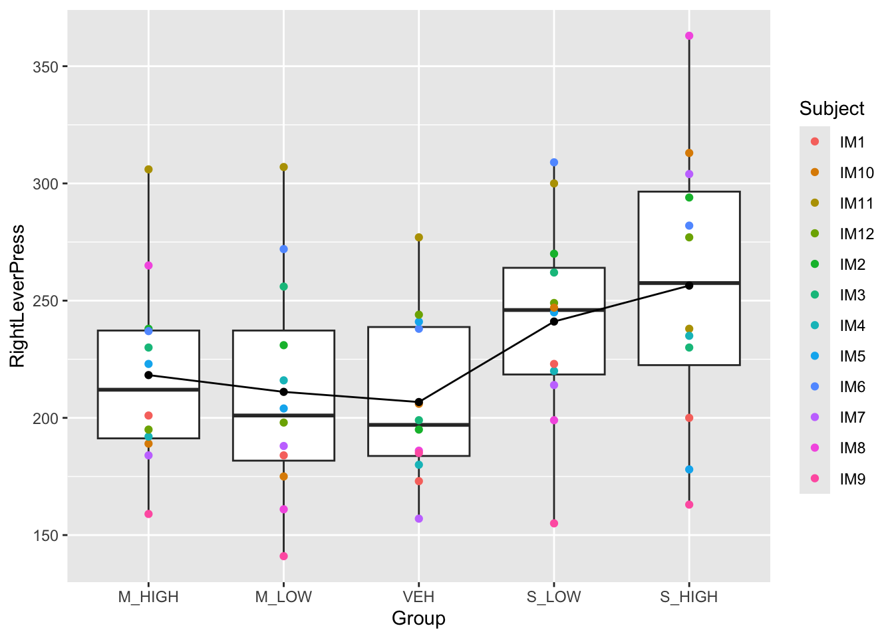
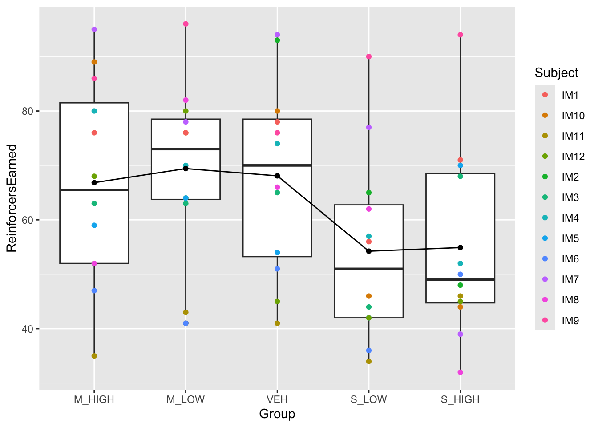
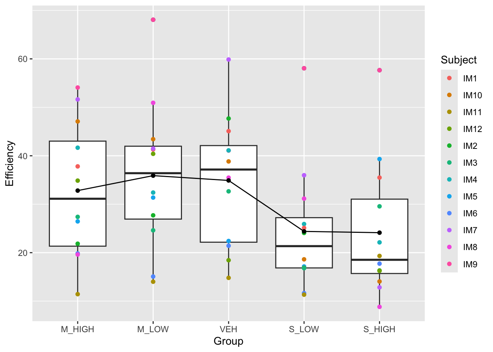
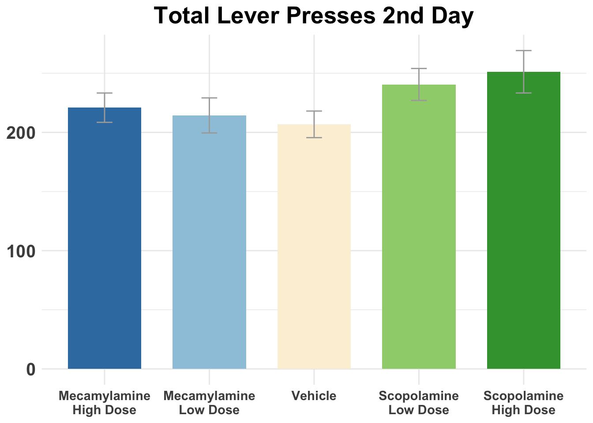
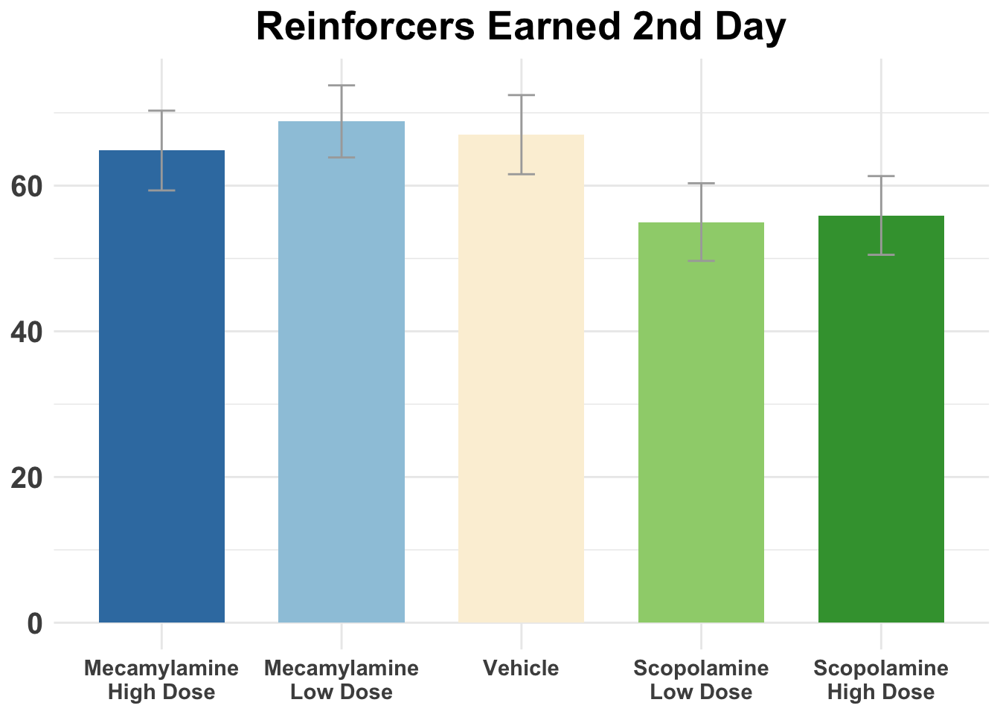
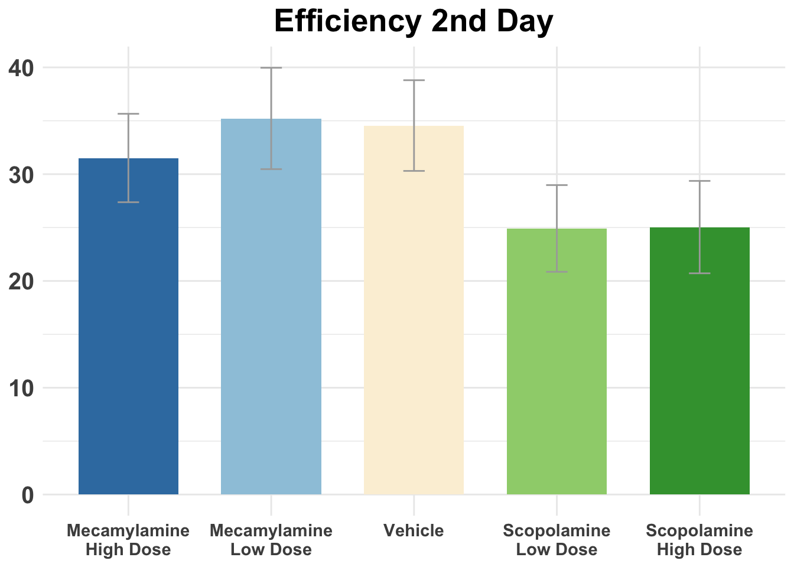
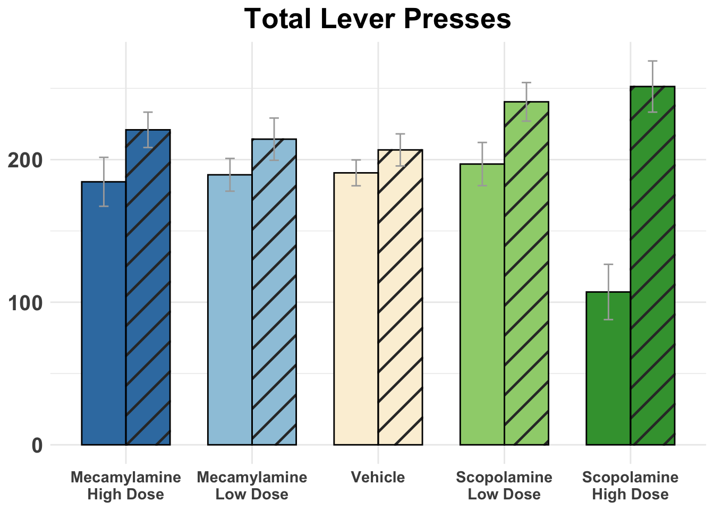
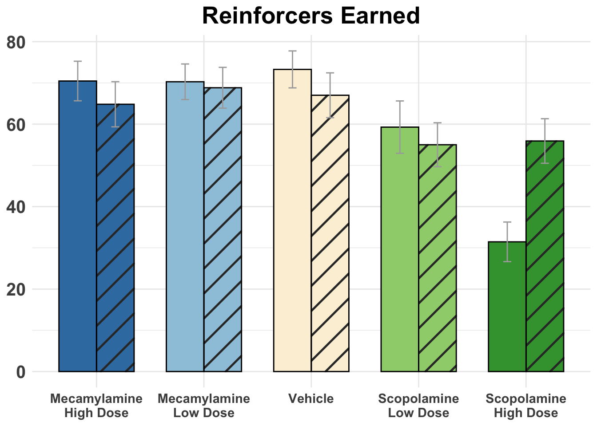
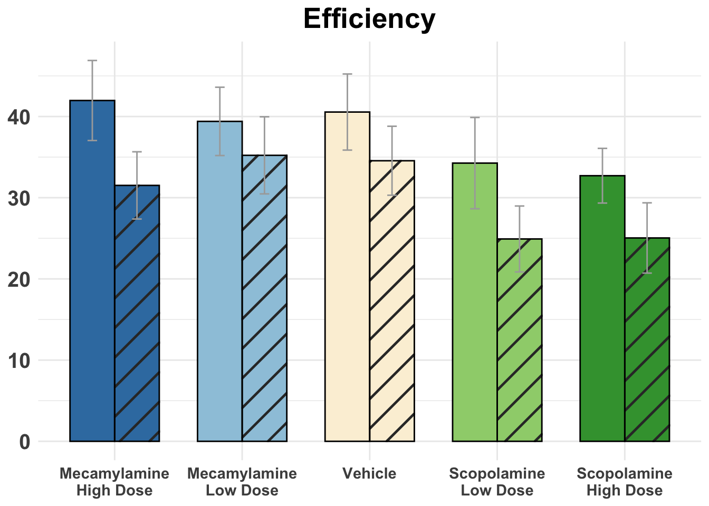

The results of my first year project indicates that blocking acetylcholine receptiors in the nucleus accumbens doesn’t affect impulsivity. However, previous studies have shown that 24 hours after the injecting scopolomine (Ach muscarinic receptor antagonist) the PPE mRNA less. This is the mRNA that produces PPE, which a precursor of a mu-opioid neurotransmitter. We have found that stimulitaing mu-opioid receptors in NAc would increase impulsivity. So one of the reasons that we didn’t find significant result is that it takes time for Ach anatagnist to work with the opioid system to influence impulsivity. On that note, it would be helpful to analyze rats’ implulsivity the day after we give the injection to see if scopolomine produces any effect that we didn’t after in the 1-hr experiment right after the injection. We happen to have the data, so this project aims to analyze it.
library(readxl)
library(tidyverse)## ── Attaching core tidyverse packages ──────────────────────── tidyverse 2.0.0 ──
## ✔ dplyr 1.1.4 ✔ readr 2.1.5
## ✔ forcats 1.0.0 ✔ stringr 1.5.1
## ✔ ggplot2 3.5.2 ✔ tibble 3.2.1
## ✔ lubridate 1.9.4 ✔ tidyr 1.3.1
## ✔ purrr 1.0.4
## ── Conflicts ────────────────────────────────────────── tidyverse_conflicts() ──
## ✖ dplyr::filter() masks stats::filter()
## ✖ dplyr::lag() masks stats::lag()
## ℹ Use the conflicted package (<http://conflicted.r-lib.org/>) to force all conflicts to become errorslibrary(haven)
library(lme4)## Loading required package: Matrix
##
## Attaching package: 'Matrix'
##
## The following objects are masked from 'package:tidyr':
##
## expand, pack, unpacklibrary(lmerTest)##
## Attaching package: 'lmerTest'
##
## The following object is masked from 'package:lme4':
##
## lmer
##
## The following object is masked from 'package:stats':
##
## steplibrary(ez)
library(emmeans)## Welcome to emmeans.
## Caution: You lose important information if you filter this package's results.
## See '? untidy'library(ggpattern)
library(afex)## ************
## Welcome to afex. For support visit: http://afex.singmann.science/
## - Functions for ANOVAs: aov_car(), aov_ez(), and aov_4()
## - Methods for calculating p-values with mixed(): 'S', 'KR', 'LRT', and 'PB'
## - 'afex_aov' and 'mixed' objects can be passed to emmeans() for follow-up tests
## - Get and set global package options with: afex_options()
## - Set sum-to-zero contrasts globally: set_sum_contrasts()
## - For example analyses see: browseVignettes("afex")
## ************
##
## Attaching package: 'afex'
##
## The following object is masked from 'package:lme4':
##
## lmerIM_DD1_2day <- read_excel("data/fyp/1dayafterinjection/IM-3-21-Basic.xlsx")
IM_DD2_2day <- read_excel("data/fyp/1dayafterinjection/IM-3-24-Basic.xlsx")
IM_DD3_2day <- read_excel("data/fyp/1dayafterinjection/IM-3-27-Basic.xlsx")
IM_DD4_2day <- read_excel("data/fyp/1dayafterinjection/IM-4-02-Basic.xlsx")
IM_DD5_2day <- read_excel("data/fyp/1dayafterinjection/IM-4-06-Basic.xlsx")
IM_all_clean <- read_rds("data/fyp/IM_all_clean.rds")IM_all_2day <- bind_rows(IM_DD1_2day, IM_DD2_2day, IM_DD3_2day, IM_DD4_2day, IM_DD5_2day)
IM_all_2day$Efficiency <- IM_all_2day$ReinforcersEarned / IM_all_2day$RightLeverPress * 100
IM_all_2day <- IM_all_2day %>%
filter(Subject != "IM10")IM_all_2day$Group <- factor(IM_all_2day$Group, levels = c("M_HIGH", "M_LOW", "VEH", "S_LOW", "S_HIGH"))
#Lever press plot
IM_all_2day %>%
ggplot(aes(x = Group, y = RightLeverPress)) +
geom_boxplot() +
geom_point(aes(color = Subject)) +
stat_summary(fun = mean, geom = "line", group = 1, color = "black") +
stat_summary(fun = mean, geom = "point", color = "black") 
#Reinforcers earned plot
IM_all_2day %>%
ggplot(aes(x = Group, y = ReinforcersEarned)) +
geom_boxplot() +
geom_point(aes(color = Subject)) +
stat_summary(fun = mean, geom = "line", group = 1, color = "black") +
stat_summary(fun = mean, geom = "point", color = "black") 
#Efficiency plot
IM_all_2day %>%
ggplot(aes(x = Group, y = Efficiency)) +
geom_boxplot() +
geom_point(aes(color = Subject)) +
stat_summary(fun = mean, geom = "line", group = 1, color = "black") +
stat_summary(fun = mean, geom = "point", color = "black")  This is fucking beautiful. This is exactly we predicted!
Right Lever Press:
RLP_results <- ezANOVA(
data = IM_all_2day,
dv = .(RightLeverPress), # Dependent variable
wid = .(Subject), # Within-subject variable (ID)
within = .(Group) # Repeated measures factor
)## Warning: Converting "Subject" to factor for ANOVA.RLP_results #sig## $ANOVA
## Effect DFn DFd F p p<.05 ges
## 2 Group 4 40 2.906739 0.03344763 * 0.1205511
##
## $`Mauchly's Test for Sphericity`
## Effect W p p<.05
## 2 Group 0.06531366 0.007226675 *
##
## $`Sphericity Corrections`
## Effect GGe p[GG] p[GG]<.05 HFe p[HF] p[HF]<.05
## 2 Group 0.456609 0.0840079 0.5533325 0.07111271#post hoc
pairwise.t.test(IM_all_2day$RightLeverPress, IM_all_2day$Group, paired = TRUE, p.adjust.method = "bonferroni")##
## Pairwise comparisons using paired t tests
##
## data: IM_all_2day$RightLeverPress and IM_all_2day$Group
##
## M_HIGH M_LOW VEH S_LOW
## M_LOW 1.00 - - -
## VEH 1.00 1.00 - -
## S_LOW 1.00 1.00 1.00 -
## S_HIGH 1.00 0.49 0.74 1.00
##
## P value adjustment method: bonferroni#S_HIGH pressed significantly less levers than all other groupsReinforcers Earned:
RLP_results <- ezANOVA(
data = IM_all_2day,
dv = .(ReinforcersEarned), # Dependent variable
wid = .(Subject), # Within-subject variable (ID)
within = .(Group) # Repeated measures factor
)## Warning: Converting "Subject" to factor for ANOVA.RLP_results #sig## $ANOVA
## Effect DFn DFd F p p<.05 ges
## 2 Group 4 40 2.921714 0.03278747 * 0.1044043
##
## $`Mauchly's Test for Sphericity`
## Effect W p p<.05
## 2 Group 0.2706662 0.2846514
##
## $`Sphericity Corrections`
## Effect GGe p[GG] p[GG]<.05 HFe p[HF] p[HF]<.05
## 2 Group 0.6441265 0.06000946 0.8871014 0.0396343 *#post hoc
pairwise.t.test(IM_all_2day$ReinforcersEarned, IM_all_2day$Group, paired = TRUE, p.adjust.method = "bonferroni")##
## Pairwise comparisons using paired t tests
##
## data: IM_all_2day$ReinforcersEarned and IM_all_2day$Group
##
## M_HIGH M_LOW VEH S_LOW
## M_LOW 1.0 - - -
## VEH 1.0 1.0 - -
## S_LOW 1.0 1.0 1.0 -
## S_HIGH 1.0 0.2 1.0 1.0
##
## P value adjustment method: bonferroni#S_HIGH pressed significantly less levers than all other groupsEfficiency:
RLP_results <- ezANOVA(
data = IM_all_2day,
dv = .(Efficiency), # Dependent variable
wid = .(Subject), # Within-subject variable (ID)
within = .(Group) # Repeated measures factor
)## Warning: Converting "Subject" to factor for ANOVA.RLP_results #sig## $ANOVA
## Effect DFn DFd F p p<.05 ges
## 2 Group 4 40 2.939339 0.03202751 * 0.0974786
##
## $`Mauchly's Test for Sphericity`
## Effect W p p<.05
## 2 Group 0.2032377 0.1520978
##
## $`Sphericity Corrections`
## Effect GGe p[GG] p[GG]<.05 HFe p[HF] p[HF]<.05
## 2 Group 0.634762 0.05999877 0.8688412 0.04002953 *#post hoc
pairwise.t.test(IM_all_2day$Efficiency, IM_all_2day$Group, paired = TRUE, p.adjust.method = "bonferroni")##
## Pairwise comparisons using paired t tests
##
## data: IM_all_2day$Efficiency and IM_all_2day$Group
##
## M_HIGH M_LOW VEH S_LOW
## M_LOW 1.00 - - -
## VEH 1.00 1.00 - -
## S_LOW 1.00 1.00 1.00 -
## S_HIGH 1.00 0.23 1.00 1.00
##
## P value adjustment method: bonferroni#S_HIGH pressed significantly less levers than all other groupsThey are all significant! So injecting scopolamine does affect rats’ impulsivity, but the effect is delayed till the second day!
Right Lever Press:
# total level press
# Calculate standard error
means <- IM_all_2day %>%
group_by(Group) %>%
summarize(
MeanScore = mean(RightLeverPress),
SE = sd(RightLeverPress) / sqrt(n()),
.groups = "drop"
)
# Add error bars
ggplot(means, aes(x = Group, y = MeanScore, fill = Group)) +
geom_bar(stat = "identity", width = 0.7) +
geom_errorbar(aes(ymin = MeanScore - SE, ymax = MeanScore + SE), width = 0.15, color = "darkgrey") +
labs(title = "Total Lever Presses 2nd Day", x = NULL, y = NULL) +
scale_fill_manual(values = c("M_HIGH" = "#397DB0", "M_LOW" = "#9DC7DD", "VEH" = "#fbf0d9", "S_LOW" = "#9ED17B", "S_HIGH" = "#3D9F3C")) +
scale_x_discrete(labels = c("M_HIGH" = "Mecamylamine\nHigh Dose", "M_LOW" = "Mecamylamine\nLow Dose", "VEH" = "Vehicle", "S_LOW" = "Scopolamine\nLow Dose", "S_HIGH" = "Scopolamine\nHigh Dose")) +
theme_minimal() +
theme(legend.position = "none", axis.text.x = element_text(size = 11, face = "bold"), axis.text.y = element_text(size = 15, face = "bold"), plot.title = element_text(hjust = 0.5, size = 20, face = "bold"))
Reinforcers Earned:
# total level press
# Calculate standard error
means <- IM_all_2day %>%
group_by(Group) %>%
summarize(
MeanScore = mean(ReinforcersEarned),
SE = sd(ReinforcersEarned) / sqrt(n()),
.groups = "drop"
)
# Add error bars
ggplot(means, aes(x = Group, y = MeanScore, fill = Group)) +
geom_bar(stat = "identity", width = 0.7) +
geom_errorbar(aes(ymin = MeanScore - SE, ymax = MeanScore + SE), width = 0.15, color = "darkgrey") +
labs(title = "Reinforcers Earned 2nd Day", x = NULL, y = NULL) +
scale_fill_manual(values = c("M_HIGH" = "#397DB0", "M_LOW" = "#9DC7DD", "VEH" = "#fbf0d9", "S_LOW" = "#9ED17B", "S_HIGH" = "#3D9F3C")) +
scale_x_discrete(labels = c("M_HIGH" = "Mecamylamine\nHigh Dose", "M_LOW" = "Mecamylamine\nLow Dose", "VEH" = "Vehicle", "S_LOW" = "Scopolamine\nLow Dose", "S_HIGH" = "Scopolamine\nHigh Dose")) +
theme_minimal() +
theme(legend.position = "none", axis.text.x = element_text(size = 11, face = "bold"), axis.text.y = element_text(size = 15, face = "bold"), plot.title = element_text(hjust = 0.5, size = 20, face = "bold"))
Efficiency:
# total level press
# Calculate standard error
means <- IM_all_2day %>%
group_by(Group) %>%
summarize(
MeanScore = mean(Efficiency),
SE = sd(Efficiency) / sqrt(n()),
.groups = "drop"
)
# Add error bars
ggplot(means, aes(x = Group, y = MeanScore, fill = Group)) +
geom_bar(stat = "identity", width = 0.7) +
geom_errorbar(aes(ymin = MeanScore - SE, ymax = MeanScore + SE), width = 0.15, color = "darkgrey") +
labs(title = "Efficiency 2nd Day", x = NULL, y = NULL) +
scale_fill_manual(values = c("M_HIGH" = "#397DB0", "M_LOW" = "#9DC7DD", "VEH" = "#fbf0d9", "S_LOW" = "#9ED17B", "S_HIGH" = "#3D9F3C")) +
scale_x_discrete(labels = c("M_HIGH" = "Mecamylamine\nHigh Dose", "M_LOW" = "Mecamylamine\nLow Dose", "VEH" = "Vehicle", "S_LOW" = "Scopolamine\nLow Dose", "S_HIGH" = "Scopolamine\nHigh Dose")) +
theme_minimal() +
theme(legend.position = "none", axis.text.x = element_text(size = 11, face = "bold"), axis.text.y = element_text(size = 15, face = "bold"), plot.title = element_text(hjust = 0.5, size = 20, face = "bold"))
Since we see a different effect of drug condition for the injection day and one day post-injection. It would be helpful to combine data for both days and visualize them.
First we combine datasets for two days.
IM_all_clean$DayAfterInjection <- 0
IM_all_2day$DayAfterInjection <- 1
IM_all_grand <- bind_rows(IM_all_clean, IM_all_2day)
IM_all_grand$DayAfterInjection <- as.factor(IM_all_grand$DayAfterInjection)Then we need to map out the bar plots, shading dataset from the day after the injection. Total lever presses:
# total level press
# Calculate standard error
means <- IM_all_grand %>%
group_by(Group, DayAfterInjection) %>%
summarize(
MeanScore = mean(RightLeverPress),
SE = sd(RightLeverPress) / sqrt(n()),
.groups = "drop"
)
# Create the bar plot with shading
ggplot(means, aes(x = Group, y = MeanScore, fill = Group, pattern = DayAfterInjection)) +
geom_bar_pattern(
stat = "identity",
position = position_dodge(), # Adjust position for dodging
width = 0.7,
pattern_fill = "black",
pattern_density = 0.05,
pattern_spacing = 0.05,
pattern_angle = 45,
color = "black" # Add black borders to the bars
) +
geom_errorbar(aes(ymin = MeanScore - SE, ymax = MeanScore + SE),
width = 0.15, color = "darkgrey", position = position_dodge(width = 0.7)) +
labs(title = "Total Lever Presses", x = NULL, y = NULL, pattern = NULL) +
scale_fill_manual(values = c(
"M_HIGH" = "#397DB0",
"M_LOW" = "#9DC7DD",
"VEH" = "#fbf0d9",
"S_LOW" = "#9ED17B",
"S_HIGH" = "#3D9F3C"
)) +
scale_x_discrete(labels = c(
"M_HIGH" = "Mecamylamine\nHigh Dose",
"M_LOW" = "Mecamylamine\nLow Dose",
"VEH" = "Vehicle",
"S_LOW" = "Scopolamine\nLow Dose",
"S_HIGH" = "Scopolamine\nHigh Dose"
)) +
scale_pattern_manual(values = c("0" = "none", "1" = "stripe"),
labels = c("0" = "Day of Injection", "1" = "Day After Injection")) + # Add labels to explain patterns
theme_minimal() +
theme(
legend.position = "none",
axis.text.x = element_text(size = 11, face = "bold"),
axis.text.y = element_text(size = 15, face = "bold"),
plot.title = element_text(hjust = 0.5, size = 20, face = "bold")
) 
Total reinforcers earned:
# total level press
# Calculate standard error
means <- IM_all_grand %>%
group_by(Group, DayAfterInjection) %>%
summarize(
MeanScore = mean(ReinforcersEarned),
SE = sd(ReinforcersEarned) / sqrt(n()),
.groups = "drop"
)
# Create the bar plot with shading
ggplot(means, aes(x = Group, y = MeanScore, fill = Group, pattern = DayAfterInjection)) +
geom_bar_pattern(
stat = "identity",
position = position_dodge(), # Adjust position for dodging
width = 0.7,
pattern_fill = "black",
pattern_density = 0.05,
pattern_spacing = 0.05,
pattern_angle = 45,
color = "black" # Add black borders to the bars
) +
geom_errorbar(aes(ymin = MeanScore - SE, ymax = MeanScore + SE),
width = 0.15, color = "darkgrey", position = position_dodge(width = 0.7)) +
labs(title = "Reinforcers Earned", x = NULL, y = NULL, pattern = NULL) +
scale_fill_manual(values = c(
"M_HIGH" = "#397DB0",
"M_LOW" = "#9DC7DD",
"VEH" = "#fbf0d9",
"S_LOW" = "#9ED17B",
"S_HIGH" = "#3D9F3C"
)) +
scale_x_discrete(labels = c(
"M_HIGH" = "Mecamylamine\nHigh Dose",
"M_LOW" = "Mecamylamine\nLow Dose",
"VEH" = "Vehicle",
"S_LOW" = "Scopolamine\nLow Dose",
"S_HIGH" = "Scopolamine\nHigh Dose"
)) +
scale_pattern_manual(values = c("0" = "none", "1" = "stripe"),
labels = c("0" = "Day of Injection", "1" = "Day After Injection")) + # Add labels to explain patterns
theme_minimal() +
theme(
legend.position = "none",
axis.text.x = element_text(size = 11, face = "bold"),
axis.text.y = element_text(size = 15, face = "bold"),
plot.title = element_text(hjust = 0.5, size = 20, face = "bold")
) 
Efficiency:
# Efficiency
# Calculate standard error
means <- IM_all_grand %>%
group_by(Group, DayAfterInjection) %>%
summarize(
MeanScore = mean(Efficiency),
SE = sd(Efficiency) / sqrt(n()),
.groups = "drop"
)
# Create the bar plot with shading
ggplot(means, aes(x = Group, y = MeanScore, fill = Group, pattern = DayAfterInjection)) +
geom_bar_pattern(
stat = "identity",
position = position_dodge(), # Adjust position for dodging
width = 0.7,
pattern_fill = "black",
pattern_density = 0.05,
pattern_spacing = 0.05,
pattern_angle = 45,
color = "black" # Add black borders to the bars
) +
geom_errorbar(aes(ymin = MeanScore - SE, ymax = MeanScore + SE),
width = 0.15, color = "darkgrey", position = position_dodge(width = 0.7)) +
labs(title = "Efficiency", x = NULL, y = NULL, pattern = NULL) +
scale_fill_manual(values = c(
"M_HIGH" = "#397DB0",
"M_LOW" = "#9DC7DD",
"VEH" = "#fbf0d9",
"S_LOW" = "#9ED17B",
"S_HIGH" = "#3D9F3C"
)) +
scale_x_discrete(labels = c(
"M_HIGH" = "Mecamylamine\nHigh Dose",
"M_LOW" = "Mecamylamine\nLow Dose",
"VEH" = "Vehicle",
"S_LOW" = "Scopolamine\nLow Dose",
"S_HIGH" = "Scopolamine\nHigh Dose"
)) +
scale_pattern_manual(values = c("0" = "none", "1" = "stripe"),
labels = c("0" = "Day of Injection", "1" = "Day After Injection")) + # Add labels to explain patterns
theme_minimal() +
theme(
legend.position = "none",
axis.text.x = element_text(size = 11, face = "bold"),
axis.text.y = element_text(size = 15, face = "bold"),
plot.title = element_text(hjust = 0.5, size = 20, face = "bold")
) 
#long to wide
IM_all_2day_wide <- IM_all_2day %>%
select(Subject, Group, Efficiency, ReinforcersEarned, RightLeverPress, LeftLeverPress, NosePokes) %>%
pivot_wider(
names_from = Group, # Columns to create
values_from = c(Efficiency, ReinforcersEarned, RightLeverPress, LeftLeverPress, NosePokes) # Values to fill
)
write_sav(IM_all_2day_wide, "data/fyp/IM_all_2day_wide.sav")# Run the ANOVA
############################### lever press ############################################
result <- aov_ez(
id = "Subject", # The subject identifier
dv = "RightLeverPress", # Dependent variable
data = IM_all_grand, # Data frame containing your data
within = c("Group", "DayAfterInjection"), # Within-subject factors
type = 3 # Type III sums of squares (default)
)
# Display the ANOVA results
print(result)## Anova Table (Type 3 tests)
##
## Response: RightLeverPress
## Effect df MSE F ges p.value
## 1 Group 2.35, 23.51 2729.45 2.72 + .070 .079
## 2 DayAfterInjection 1, 10 3632.94 21.31 *** .249 <.001
## 3 Group:DayAfterInjection 2.51, 25.07 2003.18 11.83 *** .203 <.001
## ---
## Signif. codes: 0 '***' 0.001 '**' 0.01 '*' 0.05 '+' 0.1 ' ' 1
##
## Sphericity correction method: GG# Post hoc comparisons
posthoc <- emmeans(result, pairwise ~ Group * DayAfterInjection, adjust = "bonferroni")
# Display post hoc results
summary(posthoc)## $emmeans
## Group DayAfterInjection emmean SE df lower.CL upper.CL
## M_HIGH X0 184 17.20 10 146 223
## M_LOW X0 189 11.50 10 164 215
## VEH X0 191 9.07 10 171 211
## S_LOW X0 197 15.10 10 163 231
## S_HIGH X0 107 19.40 10 64 150
## M_HIGH X1 221 12.40 10 193 249
## M_LOW X1 214 14.80 10 181 247
## VEH X1 207 11.20 10 182 232
## S_LOW X1 241 13.50 10 210 271
## S_HIGH X1 251 17.90 10 211 291
##
## Confidence level used: 0.95
##
## $contrasts
## contrast estimate SE df t.ratio p.value
## M_HIGH X0 - M_LOW X0 -4.91 14.40 10 -0.340 1.0000
## M_HIGH X0 - VEH X0 -6.27 13.60 10 -0.460 1.0000
## M_HIGH X0 - S_LOW X0 -12.45 19.10 10 -0.652 1.0000
## M_HIGH X0 - S_HIGH X0 77.27 14.50 10 5.344 0.0147
## M_HIGH X0 - M_HIGH X1 -36.45 20.10 10 -1.815 1.0000
## M_HIGH X0 - M_LOW X1 -29.91 18.90 10 -1.580 1.0000
## M_HIGH X0 - VEH X1 -22.36 18.50 10 -1.207 1.0000
## M_HIGH X0 - S_LOW X1 -56.09 16.50 10 -3.398 0.3058
## M_HIGH X0 - S_HIGH X1 -66.82 24.40 10 -2.744 0.9318
## M_LOW X0 - VEH X0 -1.36 7.00 10 -0.195 1.0000
## M_LOW X0 - S_LOW X0 -7.55 19.20 10 -0.393 1.0000
## M_LOW X0 - S_HIGH X0 82.18 20.40 10 4.032 0.1077
## M_LOW X0 - M_HIGH X1 -31.55 9.42 10 -3.348 0.3327
## M_LOW X0 - M_LOW X1 -25.00 8.63 10 -2.896 0.7171
## M_LOW X0 - VEH X1 -17.45 8.26 10 -2.113 1.0000
## M_LOW X0 - S_LOW X1 -51.18 9.08 10 -5.634 0.0098
## M_LOW X0 - S_HIGH X1 -61.91 20.60 10 -3.011 0.5888
## VEH X0 - S_LOW X0 -6.18 15.00 10 -0.412 1.0000
## VEH X0 - S_HIGH X0 83.55 18.30 10 4.560 0.0469
## VEH X0 - M_HIGH X1 -30.18 9.51 10 -3.173 0.4468
## VEH X0 - M_LOW X1 -23.64 10.10 10 -2.343 1.0000
## VEH X0 - VEH X1 -16.09 9.31 10 -1.729 1.0000
## VEH X0 - S_LOW X1 -49.82 8.09 10 -6.155 0.0048
## VEH X0 - S_HIGH X1 -60.55 18.70 10 -3.234 0.4029
## S_LOW X0 - S_HIGH X0 89.73 21.70 10 4.141 0.0904
## S_LOW X0 - M_HIGH X1 -24.00 21.90 10 -1.097 1.0000
## S_LOW X0 - M_LOW X1 -17.45 20.40 10 -0.856 1.0000
## S_LOW X0 - VEH X1 -9.91 16.40 10 -0.604 1.0000
## S_LOW X0 - S_LOW X1 -43.64 16.70 10 -2.606 1.0000
## S_LOW X0 - S_HIGH X1 -54.36 25.40 10 -2.142 1.0000
## S_HIGH X0 - M_HIGH X1 -113.73 26.10 10 -4.355 0.0644
## S_HIGH X0 - M_LOW X1 -107.18 24.10 10 -4.443 0.0562
## S_HIGH X0 - VEH X1 -99.64 22.60 10 -4.415 0.0587
## S_HIGH X0 - S_LOW X1 -133.36 22.60 10 -5.898 0.0068
## S_HIGH X0 - S_HIGH X1 -144.09 27.00 10 -5.338 0.0148
## M_HIGH X1 - M_LOW X1 6.55 11.20 10 0.583 1.0000
## M_HIGH X1 - VEH X1 14.09 10.80 10 1.308 1.0000
## M_HIGH X1 - S_LOW X1 -19.64 10.90 10 -1.809 1.0000
## M_HIGH X1 - S_HIGH X1 -30.36 17.60 10 -1.720 1.0000
## M_LOW X1 - VEH X1 7.55 11.40 10 0.660 1.0000
## M_LOW X1 - S_LOW X1 -26.18 5.70 10 -4.596 0.0444
## M_LOW X1 - S_HIGH X1 -36.91 22.70 10 -1.624 1.0000
## VEH X1 - S_LOW X1 -33.73 10.00 10 -3.356 0.3281
## VEH X1 - S_HIGH X1 -44.45 22.30 10 -1.993 1.0000
## S_LOW X1 - S_HIGH X1 -10.73 20.40 10 -0.525 1.0000
##
## P value adjustment: bonferroni method for 45 tests# Simple effects for Drug at each Day
emmeans(result, ~ Group | DayAfterInjection)## DayAfterInjection = X0:
## Group emmean SE df lower.CL upper.CL
## M_HIGH 184 17.20 10 146 223
## M_LOW 189 11.50 10 164 215
## VEH 191 9.07 10 171 211
## S_LOW 197 15.10 10 163 231
## S_HIGH 107 19.40 10 64 150
##
## DayAfterInjection = X1:
## Group emmean SE df lower.CL upper.CL
## M_HIGH 221 12.40 10 193 249
## M_LOW 214 14.80 10 181 247
## VEH 207 11.20 10 182 232
## S_LOW 241 13.50 10 210 271
## S_HIGH 251 17.90 10 211 291
##
## Confidence level used: 0.95############################### reinforcers earned ###################
result <- aov_ez(
id = "Subject", # The subject identifier
dv = "ReinforcersEarned", # Dependent variable
data = IM_all_grand, # Data frame containing your data
within = c("Group", "DayAfterInjection"), # Within-subject factors
type = 3 # Type III sums of squares (default)
)
# Display the ANOVA results
print(result)## Anova Table (Type 3 tests)
##
## Response: ReinforcersEarned
## Effect df MSE F ges p.value
## 1 Group 2.78, 27.85 392.70 10.33 *** .278 <.001
## 2 DayAfterInjection 1, 10 110.48 0.46 .002 .512
## 3 Group:DayAfterInjection 2.88, 28.84 135.17 9.60 *** .113 <.001
## ---
## Signif. codes: 0 '***' 0.001 '**' 0.01 '*' 0.05 '+' 0.1 ' ' 1
##
## Sphericity correction method: GG# Post hoc comparisons
posthoc <- emmeans(result, pairwise ~ Group * DayAfterInjection, adjust = "bonferroni")
# Display post hoc results
summary(posthoc)## $emmeans
## Group DayAfterInjection emmean SE df lower.CL upper.CL
## M_HIGH X0 70.5 4.80 10 59.8 81.2
## M_LOW X0 70.3 4.31 10 60.7 79.9
## VEH X0 73.3 4.48 10 63.3 83.3
## S_LOW X0 59.3 6.35 10 45.1 73.4
## S_HIGH X0 31.5 4.80 10 20.8 42.2
## M_HIGH X1 64.8 5.48 10 52.6 77.0
## M_LOW X1 68.8 4.95 10 57.8 79.8
## VEH X1 67.0 5.43 10 54.9 79.1
## S_LOW X1 55.0 5.33 10 43.1 66.9
## S_HIGH X1 55.9 5.40 10 43.9 67.9
##
## Confidence level used: 0.95
##
## $contrasts
## contrast estimate SE df t.ratio p.value
## M_HIGH X0 - M_LOW X0 0.182 5.30 10 0.034 1.0000
## M_HIGH X0 - VEH X0 -2.818 3.37 10 -0.837 1.0000
## M_HIGH X0 - S_LOW X0 11.182 7.16 10 1.561 1.0000
## M_HIGH X0 - S_HIGH X0 39.000 6.10 10 6.390 0.0036
## M_HIGH X0 - M_HIGH X1 5.636 3.65 10 1.543 1.0000
## M_HIGH X0 - M_LOW X1 1.636 4.85 10 0.338 1.0000
## M_HIGH X0 - VEH X1 3.455 5.70 10 0.606 1.0000
## M_HIGH X0 - S_LOW X1 15.455 4.68 10 3.301 0.3598
## M_HIGH X0 - S_HIGH X1 14.545 6.25 10 2.329 1.0000
## M_LOW X0 - VEH X0 -3.000 5.31 10 -0.565 1.0000
## M_LOW X0 - S_LOW X0 11.000 7.76 10 1.418 1.0000
## M_LOW X0 - S_HIGH X0 38.818 5.65 10 6.872 0.0020
## M_LOW X0 - M_HIGH X1 5.455 4.08 10 1.337 1.0000
## M_LOW X0 - M_LOW X1 1.455 4.24 10 0.343 1.0000
## M_LOW X0 - VEH X1 3.273 5.28 10 0.620 1.0000
## M_LOW X0 - S_LOW X1 15.273 5.44 10 2.805 0.8380
## M_LOW X0 - S_HIGH X1 14.364 7.13 10 2.014 1.0000
## VEH X0 - S_LOW X0 14.000 5.73 10 2.445 1.0000
## VEH X0 - S_HIGH X0 41.818 6.72 10 6.220 0.0044
## VEH X0 - M_HIGH X1 8.455 4.21 10 2.009 1.0000
## VEH X0 - M_LOW X1 4.455 4.33 10 1.030 1.0000
## VEH X0 - VEH X1 6.273 3.77 10 1.665 1.0000
## VEH X0 - S_LOW X1 18.273 2.65 10 6.906 0.0019
## VEH X0 - S_HIGH X1 17.364 6.89 10 2.521 1.0000
## S_LOW X0 - S_HIGH X0 27.818 8.10 10 3.434 0.2879
## S_LOW X0 - M_HIGH X1 -5.545 7.63 10 -0.727 1.0000
## S_LOW X0 - M_LOW X1 -9.545 6.55 10 -1.458 1.0000
## S_LOW X0 - VEH X1 -7.727 5.92 10 -1.305 1.0000
## S_LOW X0 - S_LOW X1 4.273 4.93 10 0.867 1.0000
## S_LOW X0 - S_HIGH X1 3.364 7.67 10 0.438 1.0000
## S_HIGH X0 - M_HIGH X1 -33.364 5.60 10 -5.962 0.0063
## S_HIGH X0 - M_LOW X1 -37.364 5.92 10 -6.312 0.0039
## S_HIGH X0 - VEH X1 -35.545 7.00 10 -5.080 0.0215
## S_HIGH X0 - S_LOW X1 -23.545 6.38 10 -3.692 0.1872
## S_HIGH X0 - S_HIGH X1 -24.455 4.60 10 -5.322 0.0152
## M_HIGH X1 - M_LOW X1 -4.000 3.84 10 -1.040 1.0000
## M_HIGH X1 - VEH X1 -2.182 4.84 10 -0.451 1.0000
## M_HIGH X1 - S_LOW X1 9.818 4.18 10 2.347 1.0000
## M_HIGH X1 - S_HIGH X1 8.909 6.29 10 1.416 1.0000
## M_LOW X1 - VEH X1 1.818 5.37 10 0.339 1.0000
## M_LOW X1 - S_LOW X1 13.818 3.44 10 4.017 0.1103
## M_LOW X1 - S_HIGH X1 12.909 6.16 10 2.096 1.0000
## VEH X1 - S_LOW X1 12.000 3.49 10 3.436 0.2870
## VEH X1 - S_HIGH X1 11.091 7.39 10 1.502 1.0000
## S_LOW X1 - S_HIGH X1 -0.909 6.47 10 -0.141 1.0000
##
## P value adjustment: bonferroni method for 45 tests# Simple effects for Drug at each Day
emmeans(result, ~ Group | DayAfterInjection)## DayAfterInjection = X0:
## Group emmean SE df lower.CL upper.CL
## M_HIGH 70.5 4.80 10 59.8 81.2
## M_LOW 70.3 4.31 10 60.7 79.9
## VEH 73.3 4.48 10 63.3 83.3
## S_LOW 59.3 6.35 10 45.1 73.4
## S_HIGH 31.5 4.80 10 20.8 42.2
##
## DayAfterInjection = X1:
## Group emmean SE df lower.CL upper.CL
## M_HIGH 64.8 5.48 10 52.6 77.0
## M_LOW 68.8 4.95 10 57.8 79.8
## VEH 67.0 5.43 10 54.9 79.1
## S_LOW 55.0 5.33 10 43.1 66.9
## S_HIGH 55.9 5.40 10 43.9 67.9
##
## Confidence level used: 0.95############################### efficiency ###################
result <- aov_ez(
id = "Subject", # The subject identifier
dv = "Efficiency", # Dependent variable
data = IM_all_grand, # Data frame containing your data
within = c("Group", "DayAfterInjection"), # Within-subject factors
type = 3 # Type III sums of squares (default)
)
# Display the ANOVA results
print(result)## Anova Table (Type 3 tests)
##
## Response: Efficiency
## Effect df MSE F ges p.value
## 1 Group 2.85, 28.53 225.05 2.63 + .071 .072
## 2 DayAfterInjection 1, 10 104.28 14.95 ** .066 .003
## 3 Group:DayAfterInjection 2.80, 28.04 110.60 0.45 .006 .706
## ---
## Signif. codes: 0 '***' 0.001 '**' 0.01 '*' 0.05 '+' 0.1 ' ' 1
##
## Sphericity correction method: GG# Post hoc comparisons
posthoc <- emmeans(result, pairwise ~ Group * DayAfterInjection, adjust = "bonferroni")
# Display post hoc results
summary(posthoc)## $emmeans
## Group DayAfterInjection emmean SE df lower.CL upper.CL
## M_HIGH X0 42.0 4.93 10 31.0 53.0
## M_LOW X0 39.4 4.21 10 30.0 48.8
## VEH X0 40.5 4.69 10 30.1 51.0
## S_LOW X0 34.3 5.62 10 21.7 46.8
## S_HIGH X0 32.7 3.37 10 25.2 40.2
## M_HIGH X1 31.5 4.14 10 22.3 40.7
## M_LOW X1 35.2 4.75 10 24.6 45.8
## VEH X1 34.6 4.25 10 25.1 44.0
## S_LOW X1 24.9 4.06 10 15.9 34.0
## S_HIGH X1 25.0 4.33 10 15.4 34.7
##
## Confidence level used: 0.95
##
## $contrasts
## contrast estimate SE df t.ratio p.value
## M_HIGH X0 - M_LOW X0 2.571 3.93 10 0.653 1.0000
## M_HIGH X0 - VEH X0 1.421 3.20 10 0.444 1.0000
## M_HIGH X0 - S_LOW X0 7.710 5.94 10 1.298 1.0000
## M_HIGH X0 - S_HIGH X0 9.261 4.41 10 2.102 1.0000
## M_HIGH X0 - M_HIGH X1 10.455 3.81 10 2.745 0.9295
## M_HIGH X0 - M_LOW X1 6.752 3.85 10 1.754 1.0000
## M_HIGH X0 - VEH X1 7.418 5.27 10 1.407 1.0000
## M_HIGH X0 - S_LOW X1 17.053 3.77 10 4.526 0.0494
## M_HIGH X0 - S_HIGH X1 16.928 5.16 10 3.282 0.3718
## M_LOW X0 - VEH X0 -1.150 4.47 10 -0.257 1.0000
## M_LOW X0 - S_LOW X0 5.139 6.92 10 0.743 1.0000
## M_LOW X0 - S_HIGH X0 6.690 4.94 10 1.353 1.0000
## M_LOW X0 - M_HIGH X1 7.885 3.30 10 2.390 1.0000
## M_LOW X0 - M_LOW X1 4.182 3.87 10 1.081 1.0000
## M_LOW X0 - VEH X1 4.847 3.71 10 1.306 1.0000
## M_LOW X0 - S_LOW X1 14.482 4.13 10 3.503 0.2565
## M_LOW X0 - S_HIGH X1 14.357 5.57 10 2.578 1.0000
## VEH X0 - S_LOW X0 6.289 4.98 10 1.262 1.0000
## VEH X0 - S_HIGH X0 7.840 4.44 10 1.766 1.0000
## VEH X0 - M_HIGH X1 9.034 3.14 10 2.873 0.7466
## VEH X0 - M_LOW X1 5.331 2.99 10 1.785 1.0000
## VEH X0 - VEH X1 5.997 4.03 10 1.490 1.0000
## VEH X0 - S_LOW X1 15.632 1.72 10 9.103 0.0002
## VEH X0 - S_HIGH X1 15.507 4.94 10 3.137 0.4751
## S_LOW X0 - S_HIGH X0 1.551 6.69 10 0.232 1.0000
## S_LOW X0 - M_HIGH X1 2.745 6.52 10 0.421 1.0000
## S_LOW X0 - M_LOW X1 -0.957 5.56 10 -0.172 1.0000
## S_LOW X0 - VEH X1 -0.292 5.79 10 -0.050 1.0000
## S_LOW X0 - S_LOW X1 9.343 4.29 10 2.177 1.0000
## S_LOW X0 - S_HIGH X1 9.218 6.51 10 1.416 1.0000
## S_HIGH X0 - M_HIGH X1 1.195 4.67 10 0.256 1.0000
## S_HIGH X0 - M_LOW X1 -2.508 5.04 10 -0.498 1.0000
## S_HIGH X0 - VEH X1 -1.843 5.74 10 -0.321 1.0000
## S_HIGH X0 - S_LOW X1 7.792 4.52 10 1.723 1.0000
## S_HIGH X0 - S_HIGH X1 7.667 3.35 10 2.286 1.0000
## M_HIGH X1 - M_LOW X1 -3.703 3.51 10 -1.056 1.0000
## M_HIGH X1 - VEH X1 -3.038 3.61 10 -0.841 1.0000
## M_HIGH X1 - S_LOW X1 6.597 2.89 10 2.282 1.0000
## M_HIGH X1 - S_HIGH X1 6.472 4.45 10 1.455 1.0000
## M_LOW X1 - VEH X1 0.665 4.73 10 0.141 1.0000
## M_LOW X1 - S_LOW X1 10.300 2.15 10 4.790 0.0331
## M_LOW X1 - S_HIGH X1 10.175 4.81 10 2.117 1.0000
## VEH X1 - S_LOW X1 9.635 3.61 10 2.668 1.0000
## VEH X1 - S_HIGH X1 9.510 6.01 10 1.582 1.0000
## S_LOW X1 - S_HIGH X1 -0.125 4.24 10 -0.030 1.0000
##
## P value adjustment: bonferroni method for 45 tests# Simple effects for Drug at each Day
emmeans(result, ~ Group | DayAfterInjection)## DayAfterInjection = X0:
## Group emmean SE df lower.CL upper.CL
## M_HIGH 42.0 4.93 10 31.0 53.0
## M_LOW 39.4 4.21 10 30.0 48.8
## VEH 40.5 4.69 10 30.1 51.0
## S_LOW 34.3 5.62 10 21.7 46.8
## S_HIGH 32.7 3.37 10 25.2 40.2
##
## DayAfterInjection = X1:
## Group emmean SE df lower.CL upper.CL
## M_HIGH 31.5 4.14 10 22.3 40.7
## M_LOW 35.2 4.75 10 24.6 45.8
## VEH 34.6 4.25 10 25.1 44.0
## S_LOW 24.9 4.06 10 15.9 34.0
## S_HIGH 25.0 4.33 10 15.4 34.7
##
## Confidence level used: 0.95The plots show an interesting trend – scopolamine potentially decreases rats’ efficiency in the DRL-20 task the next day after injection, which means that the effect of blocking Ach muscarinic receptors on rats’ impulsivity maybe delayed!